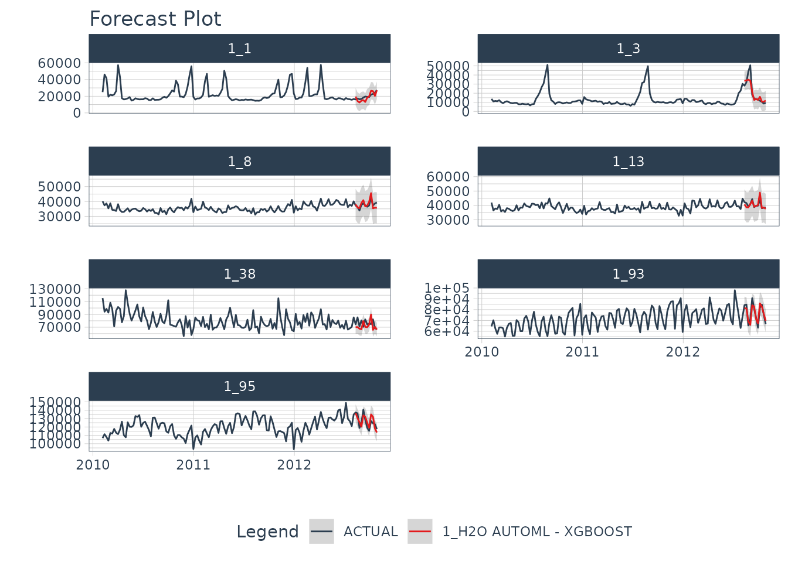
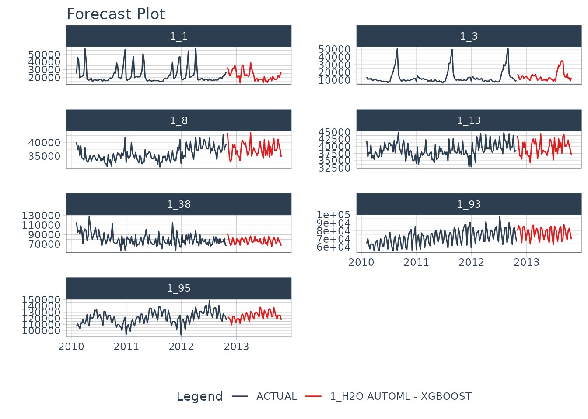

Forecasting with modeltime.h2o made easy! This short tutorial shows how you can use:
H2O AutoML for forecasting implemented via
automl_reg(). This function trains and cross-validates multiple machine learning and deep learning models (XGBoost GBM, GLMs, Random Forest, GBMs…) and then trains two Stacked Ensembled models, one of all the models, and one of only the best models of each kind. Finally, the best model is selected based on a stopping metric. And we take care of all this for you!Save & Load Models functionality to ensure the persistence of your models.
Collect data and split into training and test sets
Next, we load the walmart_sales_weekly data containing 7 time series and visualize them using the timetk::plot_time_series() function.
data_tbl <- walmart_sales_weekly %>%
select(id, Date, Weekly_Sales)
data_tbl %>%
group_by(id) %>%
plot_time_series(
.date_var = Date,
.value = Weekly_Sales,
.facet_ncol = 2,
.smooth = F,
.interactive = F
)
Then, we separate the data with the time_series_split() function and generate a training dataset and a test one.
splits <- time_series_split(data_tbl, assess = "3 month", cumulative = TRUE)
recipe_spec <- recipe(Weekly_Sales ~ ., data = training(splits)) %>%
step_timeseries_signature(Date)
train_tbl <- training(splits) %>% bake(prep(recipe_spec), .)
test_tbl <- testing(splits) %>% bake(prep(recipe_spec), .)Model specification, training and prediction
In order to correctly use modeltime.h2o, it is necessary to connect to an H2O cluster through the h2o.init() function. You can find more information on how to set up the cluster by typing ?h2o.init or by visiting the official site.
# Initialize H2O
h2o.init(
nthreads = -1,
ip = 'localhost',
port = 54321
)
#>
#> H2O is not running yet, starting it now...
#>
#> Note: In case of errors look at the following log files:
#> /tmp/RtmpENfKR2/file3dbb47e511e9/h2o_runner_started_from_r.out
#> /tmp/RtmpENfKR2/file3dbb178808a6/h2o_runner_started_from_r.err
#>
#>
#> Starting H2O JVM and connecting: ... Connection successful!
#>
#> R is connected to the H2O cluster:
#> H2O cluster uptime: 2 seconds 590 milliseconds
#> H2O cluster timezone: UTC
#> H2O data parsing timezone: UTC
#> H2O cluster version: 3.32.0.1
#> H2O cluster version age: 5 months and 11 days !!!
#> H2O cluster name: H2O_started_from_R_runner_amc448
#> H2O cluster total nodes: 1
#> H2O cluster total memory: 1.51 GB
#> H2O cluster total cores: 2
#> H2O cluster allowed cores: 2
#> H2O cluster healthy: TRUE
#> H2O Connection ip: localhost
#> H2O Connection port: 54321
#> H2O Connection proxy: NA
#> H2O Internal Security: FALSE
#> H2O API Extensions: Amazon S3, XGBoost, Algos, AutoML, Core V3, TargetEncoder, Core V4
#> R Version: R version 4.0.4 (2021-02-15)
# Optional - Set H2O No Progress to remove progress bars
h2o.no_progress()Now comes the fun part! We define our model specification with the automl_reg() function and pass the arguments through the engine:
model_spec <- automl_reg(mode = 'regression') %>%
set_engine(
engine = 'h2o',
max_runtime_secs = 5,
max_runtime_secs_per_model = 3,
max_models = 3,
nfolds = 5,
exclude_algos = c("DeepLearning"),
verbosity = NULL,
seed = 786
)
model_spec
#> H2O AutoML Model Specification (regression)
#>
#> Engine-Specific Arguments:
#> max_runtime_secs = 5
#> max_runtime_secs_per_model = 3
#> max_models = 3
#> nfolds = 5
#> exclude_algos = c("DeepLearning")
#> verbosity = NULL
#> seed = 786
#>
#> Computational engine: h2oNext, let’s train the model with fit()!
model_fitted <- model_spec %>%
fit(Weekly_Sales ~ ., data = train_tbl)
#> model_id mean_residual_deviance
#> 1 StackedEnsemble_AllModels_AutoML_20210320_005340 155888140
#> 2 XGBoost_3_AutoML_20210320_005340 293895739
#> 3 XGBoost_2_AutoML_20210320_005340 1155709343
#> 4 XGBoost_1_AutoML_20210320_005340 1209298728
#> rmse mse mae rmsle
#> 1 12485.52 155888140 9038.713 0.2389231
#> 2 17143.39 293895739 11352.049 0.3072503
#> 3 33995.73 1155709343 23989.388 0.8423622
#> 4 34774.97 1209298728 25043.280 0.8497787
#>
#> [4 rows x 6 columns]
model_fitted
#> parsnip model object
#>
#> Fit time: 13s
#>
#> H2O AutoML - Stackedensemble
#> --------
#> Model: Model Details:
#> ==============
#>
#> H2ORegressionModel: stackedensemble
#> Model ID: StackedEnsemble_AllModels_AutoML_20210320_005340
#> Number of Base Models: 3
#>
#> Base Models (count by algorithm type):
#>
#> xgboost
#> 3
#>
#> Metalearner:
#>
#> Metalearner algorithm: glm
#> Metalearner cross-validation fold assignment:
#> Fold assignment scheme: AUTO
#> Number of folds: 5
#> Fold column: NULL
#> Metalearner hyperparameters:
#>
#>
#> H2ORegressionMetrics: stackedensemble
#> ** Reported on training data. **
#>
#> MSE: 64101063
#> RMSE: 8006.314
#> MAE: 6429.391
#> RMSLE: 0.2512483
#> Mean Residual Deviance : 64101063
#>
#>
#>
#> H2ORegressionMetrics: stackedensemble
#> ** Reported on cross-validation data. **
#> ** 5-fold cross-validation on training data (Metrics computed for combined holdout predictions) **
#>
#> MSE: 155888140
#> RMSE: 12485.52
#> MAE: 9038.713
#> RMSLE: 0.2389231
#> Mean Residual Deviance : 155888140The best models are stored in the leaderbord and by default the one with the best metric with which you have decided to sort the leaderbord is selected (this behavior can be controlled with the sort_metric parameter passed through set_engine. For more information see ?h2o.automl. By default, it is sorted by the mean_residual_deviance). To list the models created during training that have finally been stored in the leaderbord you can use the automl_leaderbord function as follows:
automl_leaderboard(model_fitted)
#> # A tibble: 4 x 6
#> model_id mean_residual_devi… rmse mse mae rmsle
#> <chr> <dbl> <dbl> <dbl> <dbl> <dbl>
#> 1 StackedEnsemble_AllModels_Au… 155888140. 12486. 1.56e8 9039. 0.239
#> 2 XGBoost_3_AutoML_20210320_00… 293895739. 17143. 2.94e8 11352. 0.307
#> 3 XGBoost_2_AutoML_20210320_00… 1155709343. 33996. 1.16e9 23989. 0.842
#> 4 XGBoost_1_AutoML_20210320_00… 1209298728. 34775. 1.21e9 25043. 0.850To change the default selected model (remember, the first one sorted according to the selected metric) you can do it with the automl_update_model() function as follows (do not run the following example as the model id name will have changed as there is randomness in the process):
automl_update_model(model_fitted, model_id = "StackedEnsemble_AllModels_AutoML_20210319_204825")Finally, we predict() on the test dataset:
predict(model_fitted, test_tbl)
#> # A tibble: 84 x 1
#> .pred
#> <dbl>
#> 1 30189.
#> 2 33062.
#> 3 37945.
#> 4 47269.
#> 5 79901.
#> 6 74320.
#> 7 119437.
#> 8 30189.
#> 9 39868.
#> 10 37945.
#> # … with 74 more rowsModeltime Workflow
Once we have our fitted model, we can follow the Modeltime Workflow:
Add fitted models to a Model Table.
Calibrate the models to a testing set.
Perform Testing Set Forecast Evaluation & Accuracy Evaluation.
Refit the models to Full Dataset & Forecast Forward
Add fitted models to a Model Table
First, we create the model table:
modeltime_tbl <- modeltime_table(
model_fitted
)
modeltime_tbl
#> # Modeltime Table
#> # A tibble: 1 x 3
#> .model_id .model .model_desc
#> <int> <list> <chr>
#> 1 1 <fit[+]> H2O AUTOML - STACKEDENSEMBLECalibrate & Testing Set Forecast & Accuracy Evaluation
Next, we calibrate to the testing set and visualize the forecasts:
modeltime_tbl %>%
modeltime_calibrate(test_tbl) %>%
modeltime_forecast(
new_data = test_tbl,
actual_data = data_tbl,
keep_data = TRUE
) %>%
group_by(id) %>%
plot_modeltime_forecast(
.facet_ncol = 2,
.interactive = FALSE
)
Refit to Full Dataset & Forecast Forward
Before using refit on our dataset, let’s prepare our data. We create data_prepared_tbl which represents the complete dataset (the union of train and test) with the variables created with the recipe named recipe_spec. Subsequently, we create the dataset future_prepared_tbl that represents the dataset with the future data to one year and the required variables.
data_prepared_tbl <- bind_rows(train_tbl, test_tbl)
future_tbl <- data_prepared_tbl %>%
group_by(id) %>%
future_frame(.length_out = "1 year") %>%
ungroup()
future_prepared_tbl <- bake(prep(recipe_spec), future_tbl)Finally, we use forecast in our future dataset and visualize the results once we had reffited.
refit_tbl <- modeltime_tbl %>%
modeltime_refit(data_prepared_tbl)
#> model_id mean_residual_deviance
#> 1 StackedEnsemble_AllModels_AutoML_20210320_005359 680575277
#> 2 XGBoost_3_AutoML_20210320_005359 1587790642
#> 3 XGBoost_2_AutoML_20210320_005359 1802082476
#> 4 XGBoost_1_AutoML_20210320_005359 1827422974
#> rmse mse mae rmsle
#> 1 26087.84 680575277 21666.80 0.5830631
#> 2 39847.09 1587790642 30079.63 0.9887960
#> 3 42450.94 1802082476 32777.80 1.0998055
#> 4 42748.37 1827422974 32106.88 1.1000969
#>
#> [4 rows x 6 columns]
refit_tbl %>%
modeltime_forecast(
new_data = future_prepared_tbl,
actual_data = data_prepared_tbl,
keep_data = TRUE
) %>%
group_by(id) %>%
plot_modeltime_forecast(
.facet_ncol = 2,
.interactive = FALSE
)
We can likely do better than this if we train longer but really good for a quick example!
Saving and Loading Models
H2O models will need to “serialized” (a fancy word for saved to a directory that contains the recipe for recreating the models). To save the models, use save_h2o_model().
- Provide a directory where you want to save the model.
- This saves the model file in the directory.
model_fitted %>%
save_h2o_model(path = "../model_fitted", overwrite = TRUE)You can reload the model into R using load_h2o_model().
model_h2o <- load_h2o_model(path = "../model_fitted/")Take the High-Performance Forecasting Course
Become the forecasting expert for your organization
High-Performance Time Series Course
Time Series is Changing
Time series is changing. Businesses now need 10,000+ time series forecasts every day. This is what I call a High-Performance Time Series Forecasting System (HPTSF) - Accurate, Robust, and Scalable Forecasting.
High-Performance Forecasting Systems will save companies by improving accuracy and scalability. Imagine what will happen to your career if you can provide your organization a “High-Performance Time Series Forecasting System” (HPTSF System).
How to Learn High-Performance Time Series Forecasting
I teach how to build a HPTFS System in my High-Performance Time Series Forecasting Course. You will learn:
-
Time Series Machine Learning (cutting-edge) with
Modeltime- 30+ Models (Prophet, ARIMA, XGBoost, Random Forest, & many more) -
Deep Learning with
GluonTS(Competition Winners) - Time Series Preprocessing, Noise Reduction, & Anomaly Detection
- Feature engineering using lagged variables & external regressors
- Hyperparameter Tuning
- Time series cross-validation
- Ensembling Multiple Machine Learning & Univariate Modeling Techniques (Competition Winner)
- Scalable Forecasting - Forecast 1000+ time series in parallel
- and more.
Become the Time Series Expert for your organization.